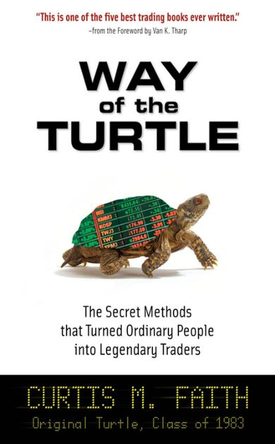

投资与投机
价值投资与投机交易，是两个截然相反的流派。
投资者花钱买下东西，然后耐心等待，相信某一天这些东西会升值，他们买的是实实在在的东西，他们等的是实实在在的时间。比如巴菲特，他是当代最著名的价值投资者，有“价值投资之神”的称号。在巴菲特的眼中，他买股票买的并不是股票本身，而是股票背后的公司：公司本身、公司的管理团队、公司的市场形象。当股价低于他的的估价时，他会毫不犹豫地买入，而当股价高于他的估价时，他也会毫不犹豫地卖出。他的投资理念为他带来了数不尽的财富。
投机者，或称为交易员。他们并不在乎股票背后的公司，他们也不买实实在在的粮食、原油、黄金，交易员只在乎价格的波动，他们拥抱风险，同时也拥抱了风险背后的利润。
根据柯蒂斯费思在《海龟交易法则》中提出的理念：如果你是一名投资者，就不要在乎短期的盈亏，因为你确信自己看中的标的物的价值会在未来给你带来收益。但如果你是一名投机交易员，你必须严格遵守自己的交易规则，切忌死扛浮亏，然后自己骗自己是在进行价值投资。无论是股票，期货还是数字货币，在踏入这个市场前，我们都需要明确自己的定位，我们的行为也需要符合自己的定位。
在很多外行人或是我们身边的人看来，投机是个贬义词，在他们眼中：一个人既然无法预测股价或期货价格的走势，那么在某个时刻下单做多做空，其实就是在赌价格上涨或者下跌，这样的行为，又与赌徒有什么区别呢？而投机之王杰西·利弗莫尔认为：价值投资才是赌博，仅仅凭借一家公司的基本面就投注自己的筹码，而忽视了背后无数个细节构成的风险，这才是不可理解的。
也许他们都是对的。在这个市场中有些人赚的盆满钵满，也有很多人亏得倾家荡产。其实，无论是投资还是投机，本质上都是拥抱利润，同时承担利润背后的风险。在金融的世界中，风险从一个人的身上转移到另一个人身上，一个人的利润也必然来源于另一个人的亏损，如果还要考虑交易的手续费，那么这场游戏从一开始就是一个负和游戏。
每个人都有自己的看法，我们需要予以充分的尊重。如果你认为投机市场能够让你获利，并且你有足够的胆量，那你就去交易；如果你觉得自己不能在交易市场中获利，那也很简单：不要参与，好好生活。人们的收益总是与自己的认知相符，而超出认知以外的盈利总会在某个时刻尽数亏光。一旦踏上了交易这条路，我们要做的就只有一件事：那就是不断地从过去的经验中总结教训，提升自己的认知和对交易的理解。
以上的话与君共勉。后续我会写更多交易类的文章。如果您想与我联系，欢迎给我的G mail发邮件。